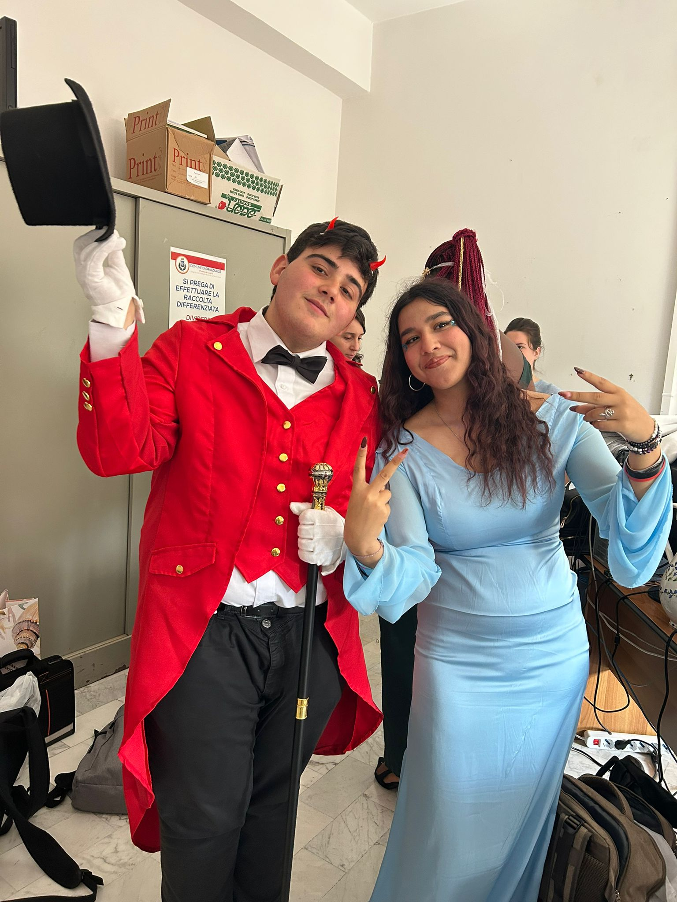
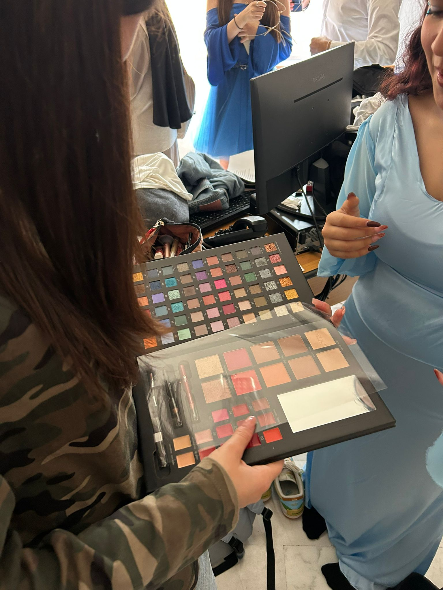
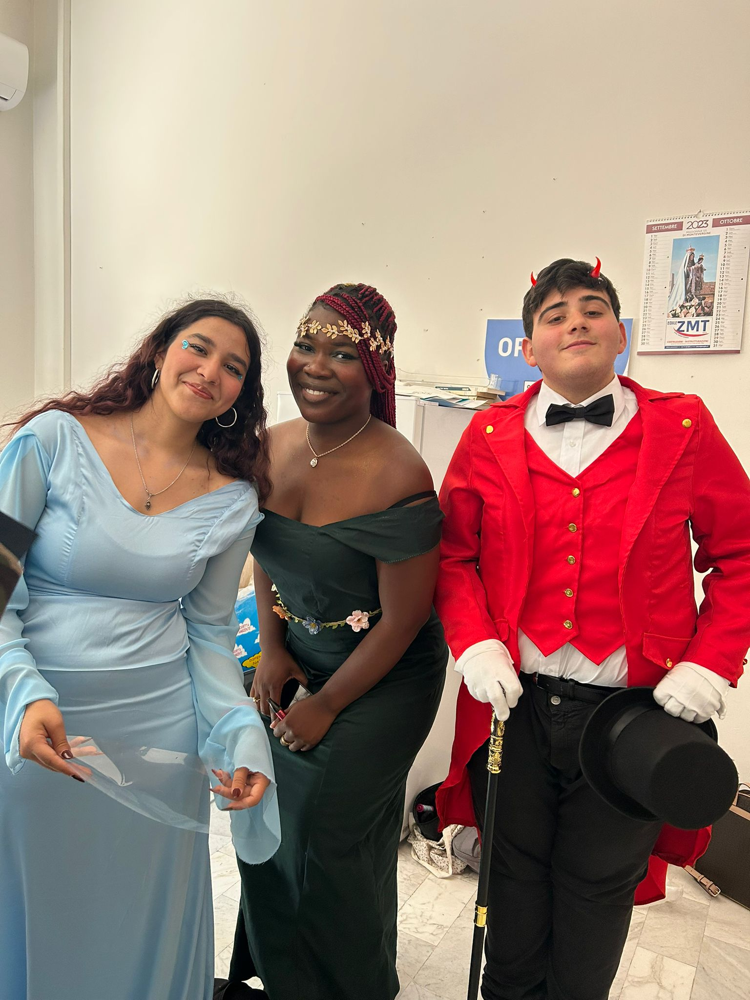
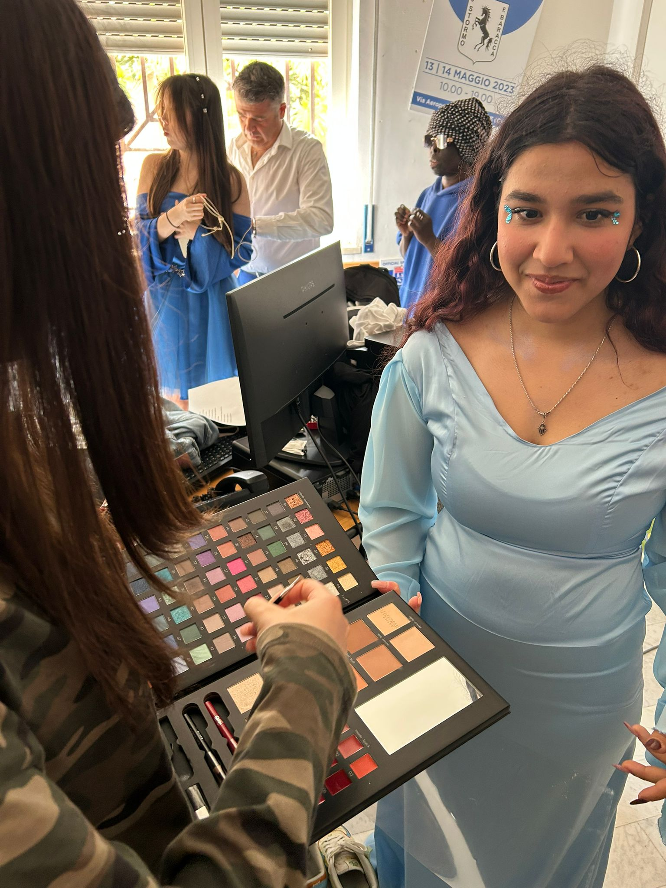
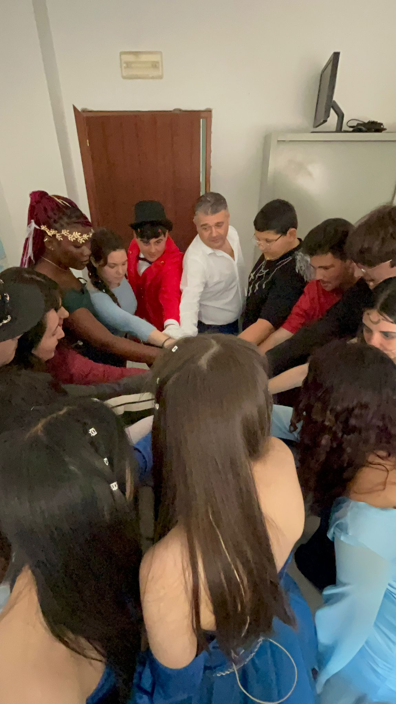
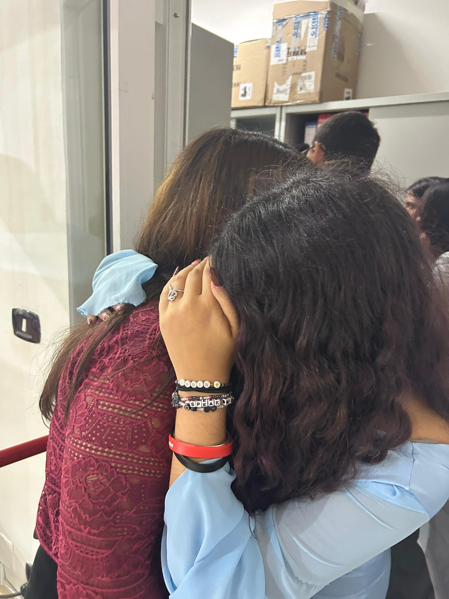
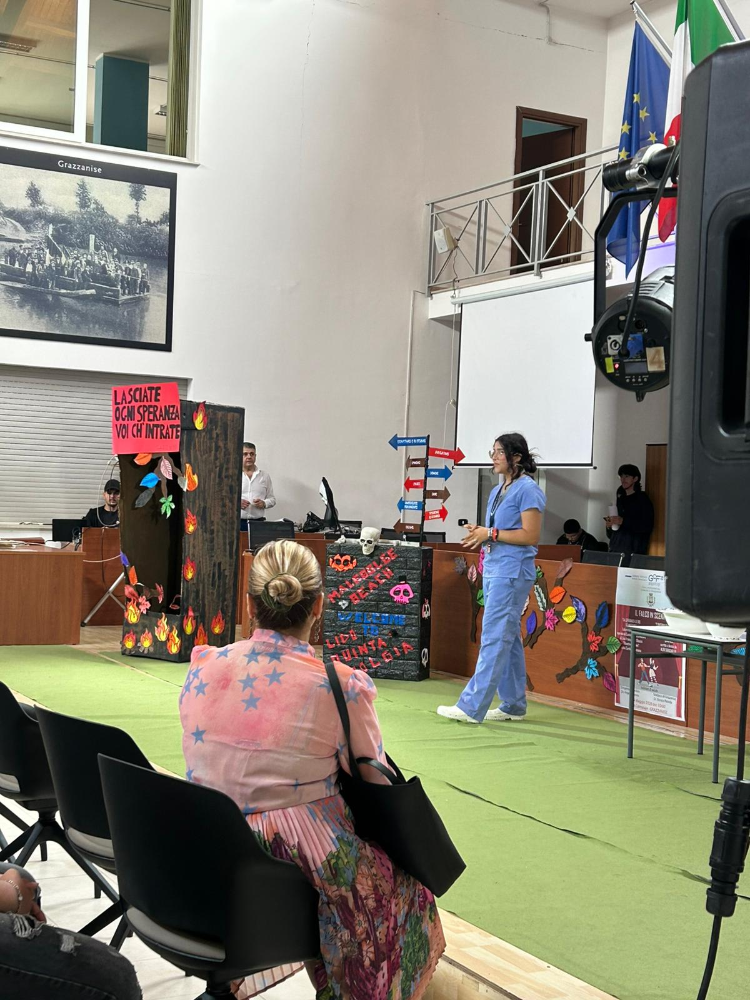
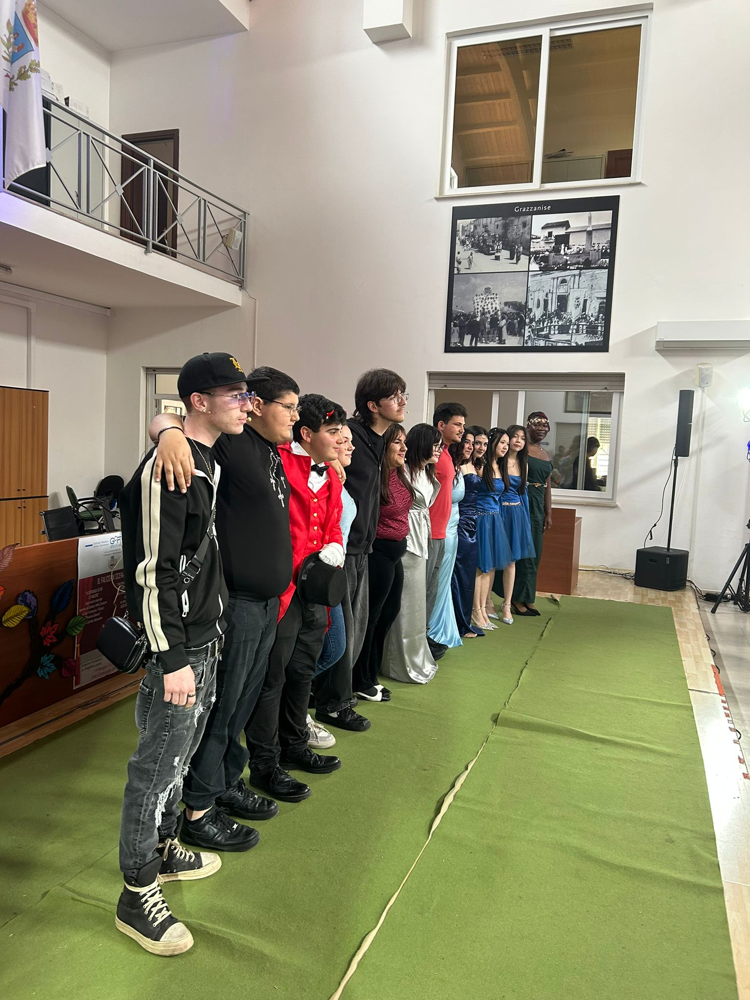
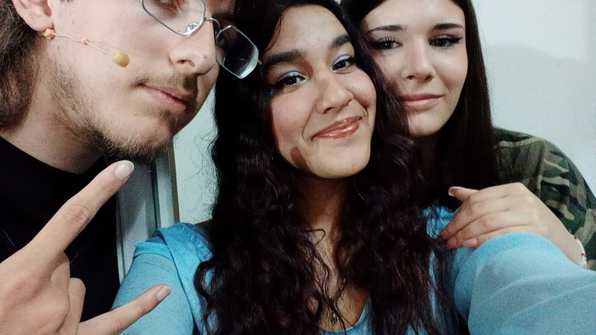

A voi, dal vostro Ingegnere.
Il mio mondo è sempre stato fatto di regole precise. Schermi freddi, tastiere, linee di codice infinite. Se scrivo un comando in un certo modo, la macchina obbedisce senza esitare. Se sbaglio una virgola, il sistema si ferma e mi avvisa. C’è una logica rassicurante e perfetta nell'ingegneria: ogni problema ha una sua formula, ogni errore può essere corretto, tutto è sempre calcolabile e prevedibile. Ma poi, in mezzo a questa perfezione matematica, ci siete stati voi.
Vi ho osservati da dietro le quinte. Da dietro lo schermo luminoso del mio computer, mentre costruivo riga dopo riga questo sito web. Mentre voi sudavate nella Sala Consiliare, io stavo qui, a cercare la sfumatura di colore giusta per i pulsanti, a organizzare i vostri nomi nel file del cast, a impaginare i testi del copione. All'inizio, devo confessarlo, per me eravate solo dei dati. Eravate stringhe di testo da formattare in HTML, fotografie in formato JPEG da caricare dentro una griglia, link da far funzionare. Siete partiti come un progetto tecnico. Ma poi ho iniziato a guardare i video. Ho iniziato a leggere davvero le parole che stavate recitando. Ho ascoltato gli audio delle prove, le vostre risate spezzate dalla fatica, la musica che accompagnava i vostri passi. E, lentamente, ho capito che quello che stavate costruendo là fuori sfuggiva a qualsiasi logica, a qualsiasi algoritmo io potessi mai scrivere.
Ho visto un gruppo di ragazzi che all’inizio faticavano persino a guardarsi negli occhi. Ragazzi carichi di tutte le paure tipiche di questa età, in cui il giudizio degli altri pesa come un macigno e la cosa più sicura e facile da fare è nascondersi, fare un passo indietro, rimanere nell'ombra. Ma voi avete fatto l'esatto opposto. Giovedì dopo giovedì, settimana dopo settimana, vi siete spogliati di quelle corazze pesanti. Avete rinunciato al controllo, vi siete buttati nel vuoto e, miracolosamente, avete imparato a volare insieme. E io guardavo questo miracolo prendere forma, affascinato da come l'arte teatrale potesse trasformare l'insicurezza in pura energia.
Mentre io lottavo con i bug del sito e cercavo di far allineare perfettamente i margini, voi lottavate con qualcosa di molto più spaventoso e grande: voi stessi. Ho visto Francesco prendere forma non solo come Santo, ma come il simbolo vibrante della vostra ribellione gentile, della vostra voglia di semplicità. Ho visto il Sole e la Luna imparare a splendere senza mai oscurarsi a vicenda. Ho visto il Fuoco bruciare di passione e l’Acqua scorrere limpida per accogliere. Ho visto il Diavolo e il Lupo dare voce alle paure più profonde e inconfessabili, per poi scoprire che quelle stesse paure, se guardate negli occhi e affrontate insieme, fanno molto, molto meno male. Non stavate recitando una semplice parte scolastica. Stavate imparando a essere uomini e donne. Vi stavate costruendo pezzo dopo pezzo.
E poi è arrivato il 14 Maggio 2026. La sera del debutto. Il giorno per cui avete vissuto in apnea per mesi interi. Io ero lì, invisibile nel mio angolo, a fare il tifo per voi. Ho sentito fisicamente il rumore del respiro sospeso in quella Sala Consiliare, un attimo infinito prima che tutto avesse inizio. Ho visto il terrore vero, quello che ti paralizza le gambe, incrociarsi nei vostri sguardi e sciogliersi nel momento esatto in cui avete fatto il primo passo sotto i fari. Sotto quelle luci calde, sotto lo sguardo di centinaia di persone, l'ansia si è trasformata in magia. In quell'istante, non eravate più studenti impauriti. Non eravate più ragazzi qualunque. Siete diventati giganti. Una forza inarrestabile della natura. Avete preso un testo di ottocento anni fa, un cantico che sembrava così lontano, e lo avete reso vivo, pulsante, moderno, indissolubilmente vostro.
Il teatro è una cosa strana, crudele e bellissima. È l'opposto del mio lavoro. Quando io pubblico un sito web, quello resta lì, immutato nel tempo, identico a se stesso finché qualcuno non spegne un server. Il teatro no. Il teatro nasce e muore nella stessa identica notte. Esiste solo nel momento assoluto in cui accade, in quello scambio di ossigeno tra voi sul palco e chi vi ascolta in platea. Eppure, guardandovi piangere e stringervi dopo l'ultimo applauso, ho capito che non è vero che svanisce. La scenografia di cartone e legno verrà smontata. I costumi rossi del presentatore e gli abiti leggeri azzurri torneranno in un armadio a prendere polvere. Il sipario si è chiuso per sempre su questa edizione del vostro Progetto Teatro. Ma l'energia che avete sprigionato quella sera... quella roba lì non si cancella. Non si cancella la connessione invisibile, quasi sacra, che si è creata tra di voi. Non esiste tasto "Delete" per quello che avete fatto provare a chi vi ha guardato con gli occhi lucidi. E non esiste e non esisterà mai un tasto "Delete" per quello che avete provato voi dentro la cassa toracica.
Sapete, mi avete insegnato una lezione enorme. Mi avete insegnato che le cose più preziose della vita non sono quelle perfette. Non sono le righe di codice scritte senza errori di sintassi. Le cose più preziose, quelle che ti cambiano l'esistenza, sono umane, vulnerabili, imperfette. Sono sporche di sudore. Sono fatte di battute dimenticate e suggerite disperatamente con lo sguardo dal compagno di fianco. Sono fatte di risate soffocate dietro le quinte mentre qualcuno parla, di mani strette al buio per farsi coraggio a vicenda quando le gambe tremano. Questo sito che ho costruito per voi è solo un contenitore freddo, una struttura vuota. Siete voi che gli avete dato l'anima, riempiendolo con la vostra arte, con i vostri volti, con la vostra fatica.
Voglio che vi facciate una promessa. Ogni volta che caricherete questa pagina, ogni volta che la vita vi sembrerà troppo difficile o vi sentirete inadeguati, ogni volta che cliccherete "Play" su quel video qui sopra... ricordatevi di chi eravate quella sera. Ricordatevi che siete stati capaci di prendere la paura e trasformarla in coraggio. Ricordatevi che siete stati capaci di fidarvi l'uno dell'altro ciecamente. Ricordatevi che avete trovato una famiglia, un branco, nel luogo esatto in cui pensavate ci fossero solo compagni di classe di passaggio. Ricordatevi l'esplosione fisica e assordante di quell'applauso finale, il momento in cui avete capito di avercela fatta, il sapore dolce e salato delle lacrime di gioia e la sensazione di assoluta onnipotenza che solo chi ha calcato un palco e ha donato se stesso può capire fino in fondo. Non permettete mai a nessuno, in tutta la vostra vita, di farvi credere che non siete in grado di fare qualcosa di straordinario. Perché io vi ho visti. Vi abbiamo visti tutti. E siete stati pura, inarrestabile, meravigliosa magia.
Adesso io torno al mio codice, alla mia logica rassicurante, ai miei schermi illuminati nel buio. Ma una parte di voi viene via con me. Grazie per avermi permesso di essere il vostro architetto digitale, l'osservatore silenzioso della vostra crescita, il custode di questa memoria preziosa. Siete stati e sarete il progetto più bello, più vero e più commovente su cui io abbia mai lavorato in tutta la mia carriera.
E vi prometto una cosa: finché i miei server saranno accesi, finché questo dominio esisterà, finché io avrò fiato per scrivere una linea di codice... la vostra luce non smetterà mai di brillare in questo piccolo angolo di internet. Siete stati immensi. Siete eterni.
— Il vostro fedele Ingegnere
Archivio Prove e Backstage











Le foto reali verranno aggiunte durante le prove.